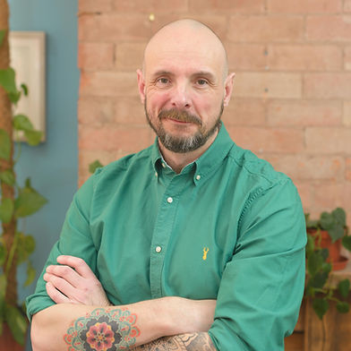
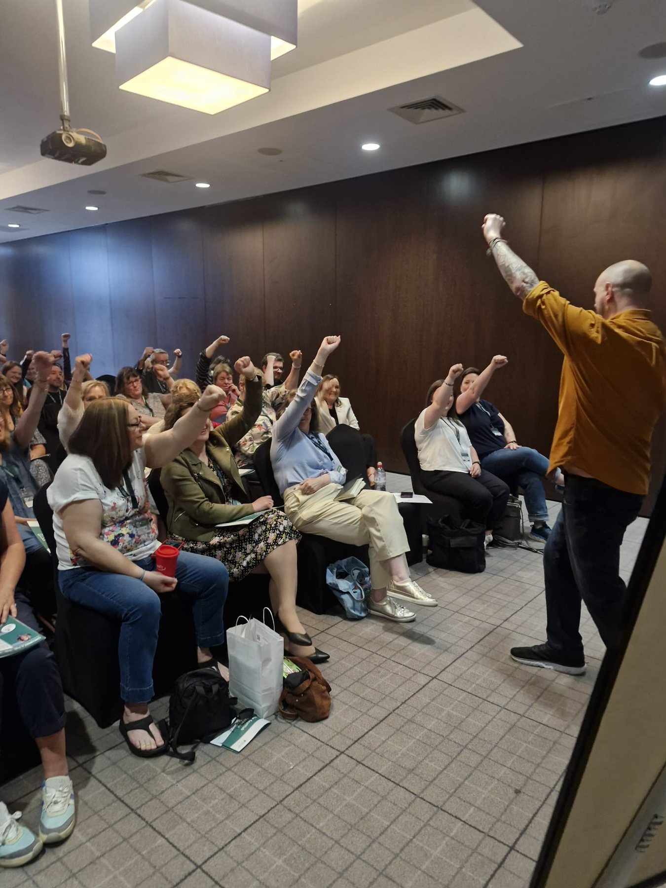
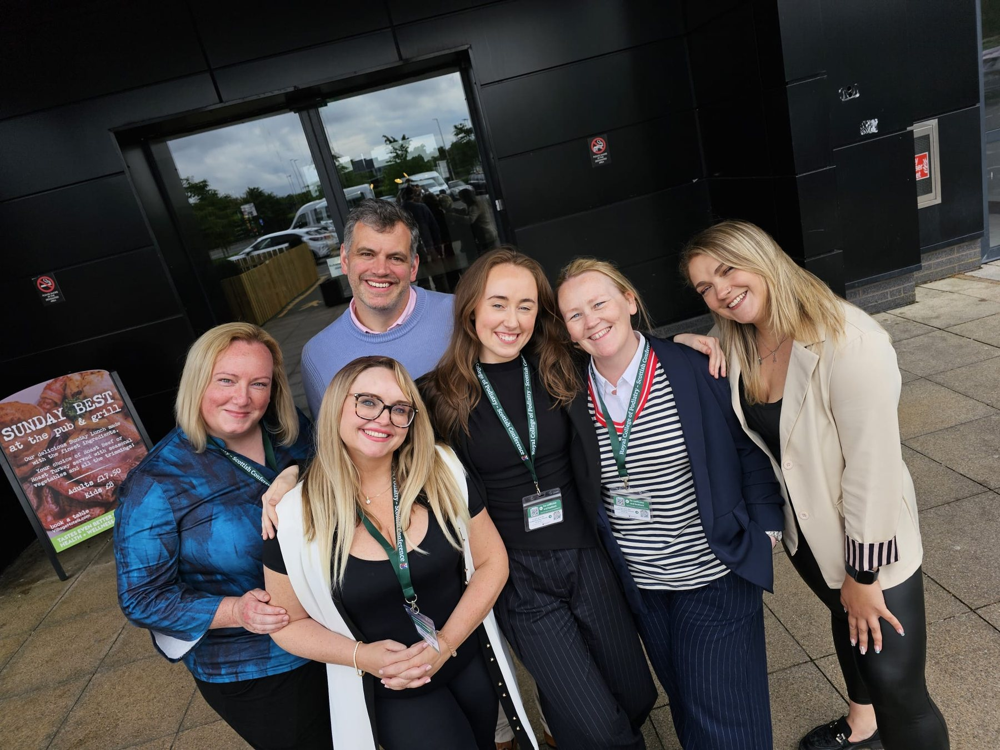
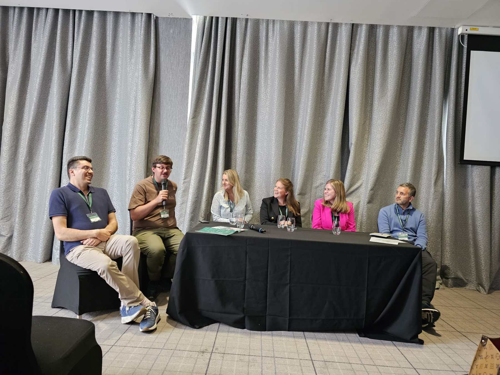
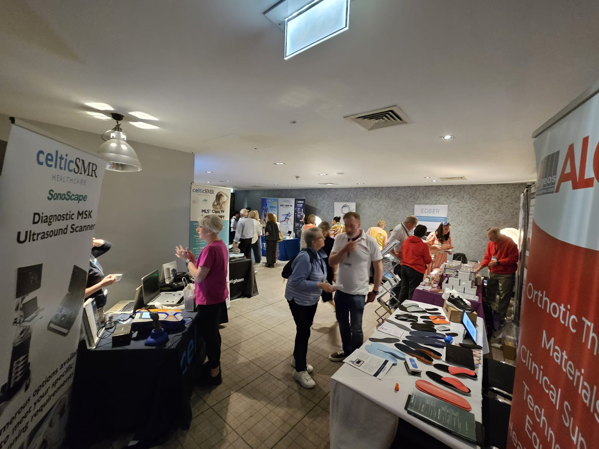
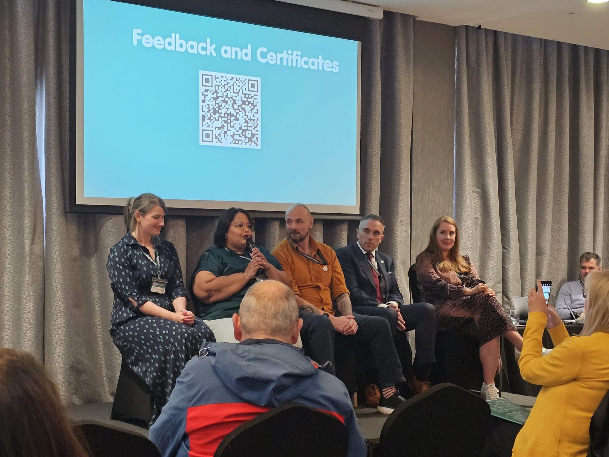
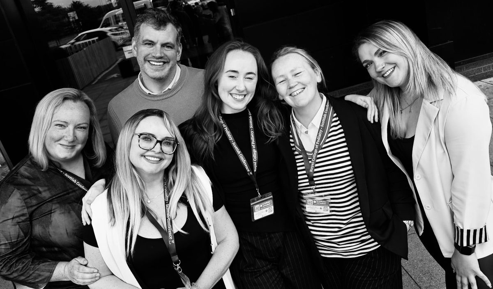
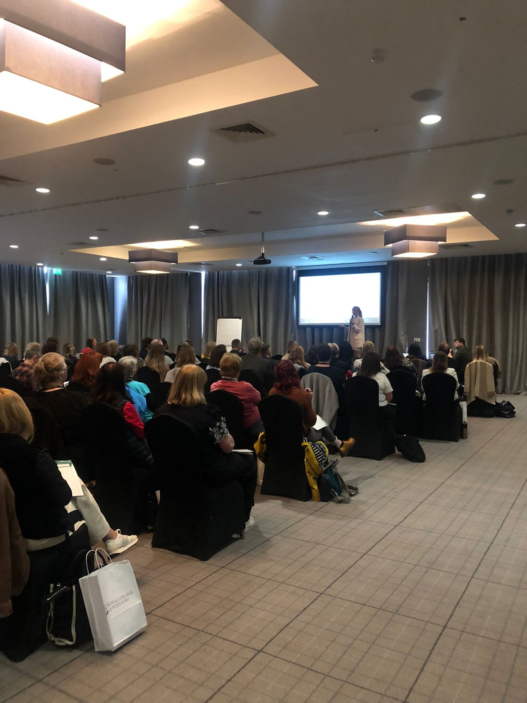

Dave James: speaking workshops
Speaker coach and TEDx speaker Dave James will lead interactive workshops focused on public speaking confidence, presentation delivery and audience engagement.
1,000 presentations. One profession sharing podiatry with communities.
Real Glasgow Branch moments: speaking practice, conference conversations, audience interaction and people learning together.





Interactive speaking support for public-facing presentations.
Frameworks and resources to shape engaging local sessions.
Reach community groups, organisations and schools.
Log talks, celebrate milestones and share progress.
A Thousand Small Steps empowers podiatrists, students and new graduates to share their expertise with the public through one collective goal: delivering 1,000 presentations across communities.
Talks can happen in community groups, local organisations, schools and public settings. Each one helps raise awareness of foot health, the role of podiatry, and the difference skilled podiatric care can make.
Participants will be supported to plan, prepare and deliver presentations with confidence.

Speaker coach and TEDx speaker Dave James will lead interactive workshops focused on public speaking confidence, presentation delivery and audience engagement.
Jill Woods, founder of Practice Momentum, will support participants to develop practical resources, strengthen networking skills and foster a collaborative professional community.

A practical route from good intent to confident local outreach.
Develop the confidence and delivery skills to speak clearly, calmly and helpfully.
Access repeatable ways to create engaging, informative presentations.
Learn how to approach local groups, organisations and schools.
Share ideas, feedback and experiences with peers working toward the same goal.
A dedicated strand will focus on outreach into schools, helping to inspire the next generation of podiatrists.
Students and newly qualified podiatrists will be supported to speak with young people about foot health, careers in podiatry and the impact they can make in communities.
Join the student strand
Every presentation delivered contributes to the shared goal.
Talks will be logged, tracked and celebrated, recognising individual contributions and collective milestones along the journey to 1,000.
Record each presentation quickly and easily.
See the collective total build over time.
Recognise individual and shared milestones.
Launching in May, with initial workshops beginning in September, the programme will roll out across Scotland with the ambition to expand further.
Open the invitation to podiatrists, students and new graduates.
Begin supported speaking and resource development sessions.
Build local connections and deliver presentations across communities.
Share learning, celebrate momentum and grow the initiative further.
Join the first wave of podiatrists, students and new graduates helping communities understand foot health and the role of podiatry.
Register your interest and the Glasgow Branch team will be able to follow up as the first workshops and resources are confirmed.
Every talk, every audience and every shared conversation helps bring podiatry closer to the communities it serves.